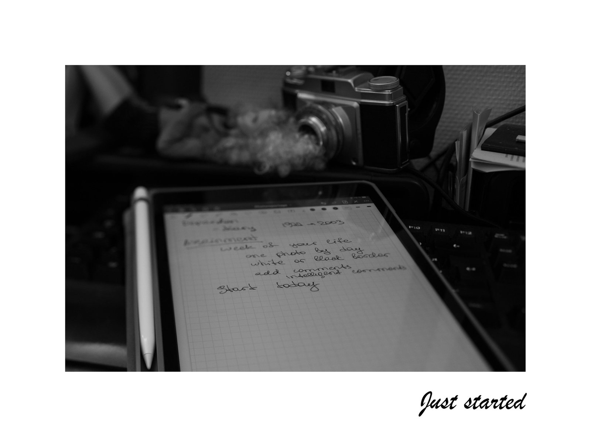
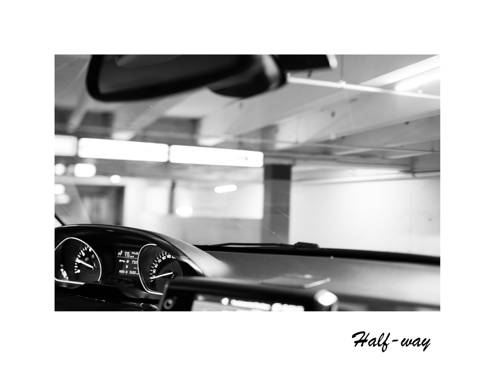
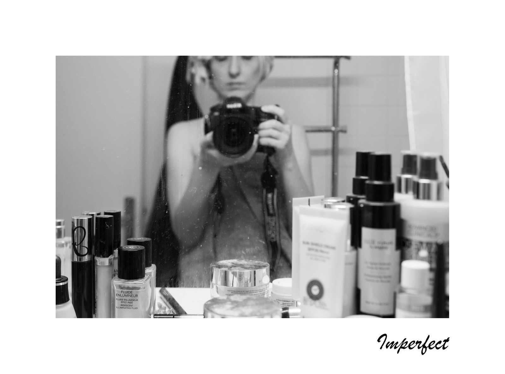
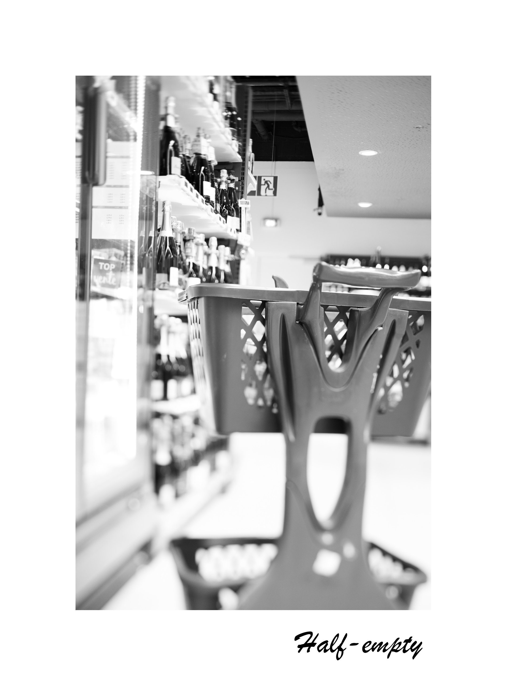
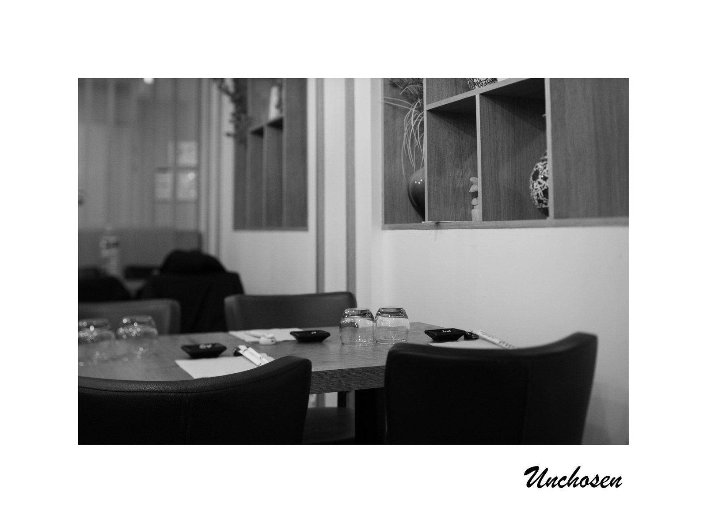
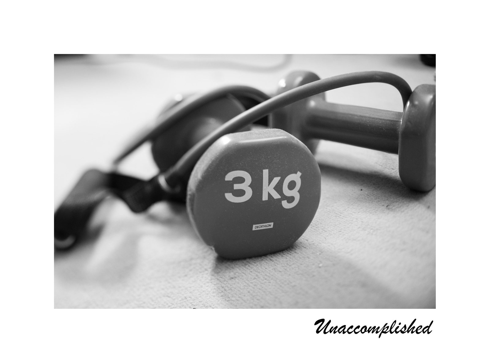
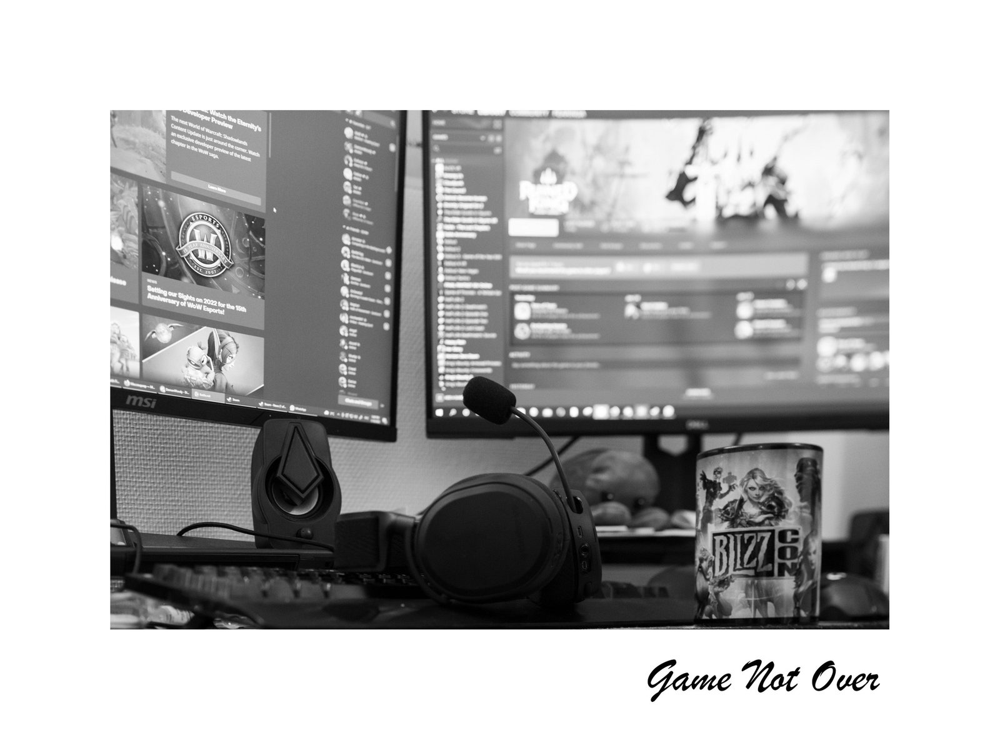

#incomplete
Our life is made of choices. We connect to our life by making a choice, by noticing what's important and what's not. We consider something completed once it's perfectly done and often we forget or don't notice all the steps that lead us to a completion.
There are 24 hours in a day. Would you remember what you have not done in just a week and what you did not choose?






